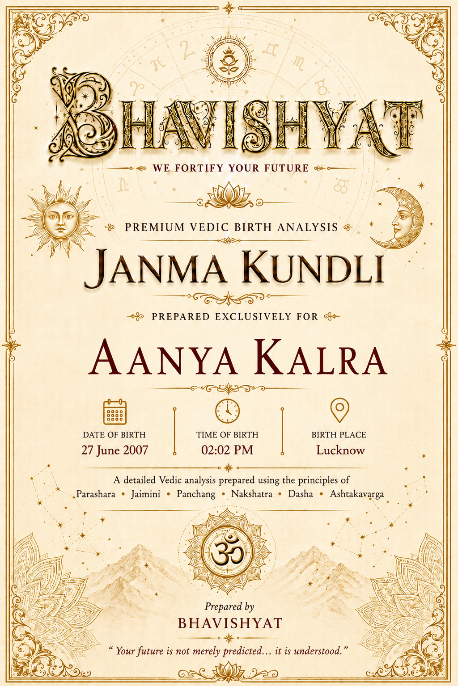
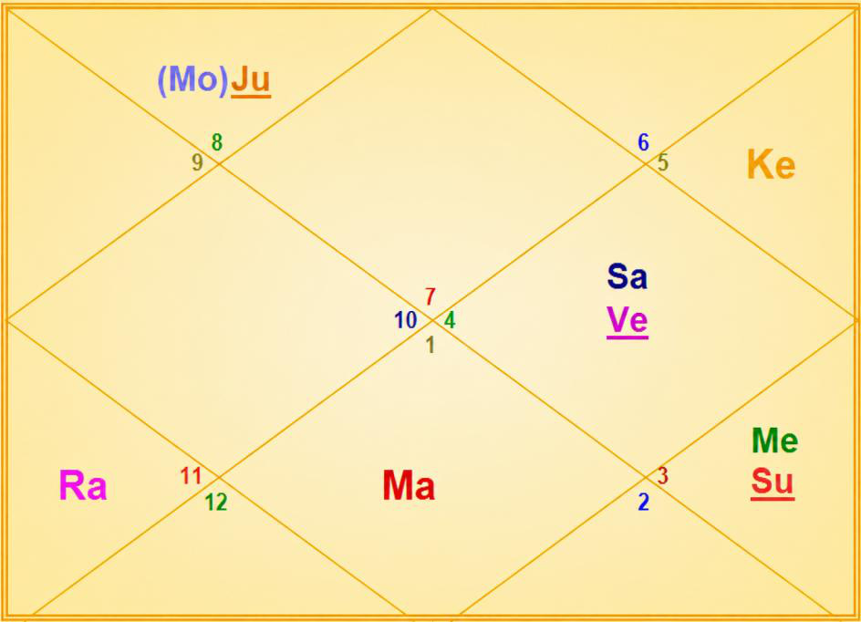

Janma Kundli • Aanya Kalra
Birth Details & Panchang
| Name | Aanya Kalra | Paksha | Shukla |
| Date of Birth | 27 June 2007 | Tithi | Dwadashi (12) |
| Time of Birth | 02:02 PM | Nakshatra | Anuradha |
| Birth Place | Lucknow | Vaar | Wednesday |
| Longitude | 80°55' E | Yoga | Saadhya |
| Latitude | 26°51' N | Karan | Baalava |
| Ascendant | Libra | Asc Lord | Venus |
| Tithi Lord | Mercury | Tithi Deity | Vishnu |
| Nakshatra Lord | Saturn | Nakshatra Deity | Mitra |
| Yoga Deity | Savitri | Karan Deity | Brahma |
| Yogi | Venus | Duplicate Yogi | Mars |
| Abhiyogi | Jupiter | Dagdha Rashi | Libra (7), Capricorn (10) |
Natal Chart (Rashi)

| Planet Distribution | Evenly Distributed — life would be overall balanced | ||
| Ascendant | Libra (Tula) | Moon / Sun Sign | Scorpio (Vrishchika) / Gemini (Mithuna) |
| Malefic | Jupiter (Guru) | Shunya Nakshatra | Purva Phalguni, Dhanishtha |
| Maraka | Mars (Mangal) | Dasha Balance | 11Y 17M 10D |
| Badhaka | Sun (Surya) | Mangalik | Yes |
| Birth Dasha | Sa-Sa-Ke (1-1-3) | ||
Janma Kundli • Aanya Kalra
Favourable Influences
| Benefic Years | 18, 20, 25, 27, 29, 34, 36, 38 | ||
| Favourable Days | Saturday, Wednesday, Friday | ||
| Favourable Planets | Saturn, Mercury, Venus, Moon, Rahu | ||
| Favourable Signs | Leo (5), Virgo (6), Sagittarius (9) | ||
| Favourable Ratna | Diamond, Blue Sapphire | Favourable UpRatna | White Sapphire, Opal, Blue Topaz, Peridot |
| Lucky Ratna | Emerald | Favourable Deity | Lakshmi |
| Favourable Metal | Silver | Favourable Colour | White |
| Direction | South-East | Favourable Cereals | Rice |
| Favourable Plant | Long Pepper, Krishna Kamal | ||
| Favourable Temple | Mahalakshmi Temple (Ujjain) | ||
Planets in Rashi Chart
| Planet | Lordship | Sign | Nakshatra | Nak. Lord | Nak. Count | Nav Tara | Char Karak |
|---|---|---|---|---|---|---|---|
| Sun | 11L | Gemini (3) | Ardra | Rahu | 17 N | 5 | Putrakarak (5H) |
| Moon | 10L | Scorpio (8) | Anuradha | Saturn | 1 N | 6 | DaraKarak (7H) |
| Mars | 7L, 2L | Aries (1) | Ashwini | Ketu | 12 N | 7 | Gnatikarak (6H) |
| Mercury | 9L, 12L | Gemini (3) | Ardra | Rahu | 17 N | 2 | Matrikarak (4H) |
| Jupiter | 3L, 6L | Scorpio (8) | Jyeshtha | Mercury | 2 N | 9 | Bhratrikaraka (3H) |
| Venus | 8L, 1L | Cancer (4) | Ashlesha | Mercury | 20 N | 4 | Amatyakarak |
| Saturn | 4L, 5L | Cancer (4) | Ashlesha | Mercury | 20 N | 1 | Atmakarak (Life) |
| Rahu | — | Aquarius (11) | Shatabhisha | Rahu | 8 N | 8 | — |
| Ketu | — | Leo (5) | Purva Phalguni | Venus | 22 N | 3 | — |
| Debilitated Planet(s) | — | Combust Planet(s) | Mercury |
| Retrograde Planet(s) | Jupiter, Mercury | ||
Sarvastakvarga & Houses
| Very Strong (35+) | — | ||
| Strong (31-35) | 6H, 7H | ||
| Above Average (28-30) | 1H, 2H, 4H, 5H, 8H, 11H, 12H | ||
| Below Average (24-27) | 3H, 10H | ||
| Weak (21-23) | 9H | ||
| Very Weak (<21) | — | ||
Janma Kundli • Aanya Kalra
Houses in Rashi Chart
| House | Sign | Planets | SAV | Lords | Aspect |
|---|---|---|---|---|---|
| 1H | Libra (7) | — | 28 | — | Rahu |
| 2H | Scorpio (8) | Moon, Jupiter | 28 | 10L; 3L, 6L | Mars |
| 3H | Sagittarius (9) | — | 26 | — | Ketu |
| 4H | Capricorn (10) | — | 29 | — | — |
| 5H | Aquarius (11) | Rahu | 28 | — | — |
| 6H | Pisces (12) | — | 31 | — | Jupiter |
| 7H | Aries (1) | Mars | 35 | 7L, 2L | Saturn, Ketu |
| 8H | Taurus (2) | — | 28 | — | — |
| 9H | Gemini (3) | Sun, Mercury | 21 | 11L; 9L, 12L | Rahu |
| 10H | Cancer (4) | Venus, Saturn | 24 | 8L, 1L; 4L, 5L | Mars, Jupiter |
| 11H | Leo (5) | Ketu | 29 | — | — |
| 12H | Virgo (6) | — | 30 | — | Saturn |
Bhinnashtak Varga (BAV)
| Sign | Sa | Ju | Ma | Su | Ve | Me | Mo | Ra |
|---|---|---|---|---|---|---|---|---|
| 7 | 2 | 3 | 6 | 3 | 5 | 7 | 2 | 1 |
| 8 | 2 | 6 | 3 | 2 | 5 | 5 | 5 | 3 |
| 9 | 4 | 5 | 2 | 4 | 3 | 2 | 6 | 4 |
| 10 | 5 | 4 | 3 | 6 | 3 | 3 | 5 | 7 |
| 11 | 2 | 5 | 3 | 4 | 6 | 6 | 2 | 2 |
| 12 | 5 | 5 | 3 | 5 | 5 | 4 | 4 | 3 |
| 1 | 4 | 5 | 6 | 6 | 4 | 6 | 4 | 2 |
| 2 | 3 | 4 | 3 | 3 | 4 | 6 | 5 | 5 |
| 3 | 3 | 5 | 1 | 2 | 4 | 3 | 3 | 7 |
| 4 | 2 | 5 | 3 | 5 | 4 | 4 | 1 | 3 |
| 5 | 2 | 4 | 4 | 4 | 4 | 5 | 6 | 3 |
| 6 | 5 | 5 | 2 | 4 | 5 | 3 | 6 | 3 |
Janma Kundli • Aanya Kalra
Vimshottari Dasha
Maha Dasha
| Dasha Lord | From | To |
|---|---|---|
| Saturn | 06-Jun-2006 | 06-Jun-2025 |
| Mercury | 06-Jun-2025 | 06-Jun-2042 |
| Ketu | 06-Jun-2042 | 05-Jun-2049 |
| Venus | 05-Jun-2049 | 05-Jun-2069 |
| Sun | 05-Jun-2069 | 06-Jun-2075 |
| Moon | 06-Jun-2075 | 05-Jun-2085 |
| Mars | 05-Jun-2085 | 05-Jun-2092 |
| Rahu | 05-Jun-2092 | 06-Jun-2110 |
| Jupiter | 06-Jun-2110 | 06-Jun-2126 |
Antar Dasha (Mercury Maha Dasha)
| AD Lord | From | To |
|---|---|---|
| Mercury | 06-Jun-2025 | 02-Nov-2027 |
| Ketu | 02-Nov-2027 | 29-Oct-2028 |
| Venus | 29-Oct-2028 | 30-Aug-2031 |
| Sun | 30-Aug-2031 | 06-Jul-2032 |
| Moon | 06-Jul-2032 | 05-Dec-2033 |
| Mars | 05-Dec-2033 | 02-Dec-2034 |
| Rahu | 02-Dec-2034 | 21-Jun-2037 |
| Jupiter | 21-Jun-2037 | 27-Sep-2039 |
| Saturn | 27-Sep-2039 | 06-Jun-2042 |
Pratyantar Dasha (Mercury Antar Dasha)
| P. Dasha | From | To |
|---|---|---|
| Mercury | 06-Jun-2025 | 08-Oct-2025 |
| Ketu | 08-Oct-2025 | 28-Nov-2025 |
| Venus | 28-Nov-2025 | 24-Apr-2026 |
| Sun | 24-Apr-2026 | 07-Jun-2026 |
| Moon | 07-Jun-2026 | 19-Aug-2026 |
| Mars | 19-Aug-2026 | 10-Oct-2026 |
| Rahu | 10-Oct-2026 | 19-Feb-2027 |
| Jupiter | 19-Feb-2027 | 16-Jun-2027 |
| Saturn | 16-Jun-2027 | 02-Nov-2027 |
Janma Kundli • Aanya Kalra
Nav Tara Sequence
| Planet | Chara Karak | House | Lordship | Strength | Nakshatra | Lord | Placement |
|---|---|---|---|---|---|---|---|
| Saturn | Atmakarak (Life) | 10H | 4L, 5L | Below Avg (24-27) | Ashlesha | Mercury | 9H |
| Mercury | Matrikarak (4H) | 9H | 9L, 12L | Weak (21-23) | Ardra | Rahu | 5H |
| Ketu | — | 11H | — | Above Avg (28-30) | Purva Phalguni | Venus | 10H |
| Venus | Amatyakarak | 10H | 8L, 1L | Below Avg (24-27) | Ashlesha | Mercury | 9H |
| Sun | Putrakarak (5H) | 9H | 11L | Weak (21-23) | Ardra | Rahu | 5H |
| Moon | DaraKarak (7H) | 2H | 10L | Above Avg (28-30) | Anuradha | Saturn | 10H |
| Mars | Gnatikarak (6H) | 7H | 7L, 2L | Strong (31-35) | Ashwini | Ketu | 11H |
| Rahu | — | 5H | — | Above Avg (28-30) | Shatabhisha | Rahu | 5H |
| Jupiter | Bhratrikaraka (3H) | 2H | 3L, 6L | Above Avg (28-30) | Jyeshtha | Mercury | 9H |
Birth Chart Nav Tara Chakra
| Saturn (Janam) | 1 | Moon | 10 | 19 | ||
| Mercury (Sampat) | 2 | Jupiter | 11 | 20 | Venus, Saturn | |
| Ketu (Vipat) | 3 | 12 | Mars | 21 | ||
| Venus (Kshem) | 4 | 13 | 22 | Ketu | ||
| Sun (Pratyari) | 5 | 14 | 23 | |||
| Moon (Sadhak) | 6 | 15 | 24 | |||
| Mars (Nidhan) | 7 | 16 | 25 | |||
| Rahu (Mitra) | 8 | Rahu | 17 | Sun, Mercury | 26 | |
| Jupiter (Ati Mitra) | 9 | 18 | 27 |
Important Saturn Transits
| 1st Sade Sati | 15 Nov 2011 – 24 Jan 2020 | ||
| 2nd Sade Sati | 26 Sep 2041 – 04 Dec 2049 | ||
| 3rd Sade Sati | 04 Nov 2070 – 15 Jan 2079 | ||
| Kantak Shani | 29 Apr 2022 – 12 Jul 2022; 17 Jan 2023 – 29 Mar 2025 | ||
| Ashtam Shani | 31 May 2032 – 13 Jul 2034 | ||
Janma Kundli • Aanya Kalra
Other Important Transits
| Type | Planet | House | SAV, BAV | From | To |
|---|---|---|---|---|---|
| Good | Saturn | 6H, 7H | — | 29 Mar 2025 | 08 Aug 2029 |
| Saturn | 7H | 35, 4 | 05 Oct 2029 | 17 Apr 2030 | |
| Rahu | 6H | 31, 3 | 30 Oct 2023 | 18 May 2025 | |
| Jupiter | 6H, 7H | — | 13 Apr 2022 | 01 May 2024 | |
| Jupiter | 9H, 10H | — | 14 May 2025 | 31 Oct 2026 | |
| Challenging | Saturn | 5H | 28, 2 | 17 Jan 2023 | 29 Mar 2025 |
| Saturn | 9H | 21, 3 | 31 May 2032 | 13 Jul 2034 | |
| Rahu | 5H | 28, 2 | 18 May 2025 | 05 Dec 2026 | |
| Ketu | 10H | 24 | 05 Dec 2026 | 23 Jun 2028 |
Lal Kitab Birth Chart
| HN | Rashi | Planets | Varshphal Yr 20 27 Jun 2026 – 26 Jun 2027 |
Varshphal Yr 21 27 Jun 2027 – 26 Jun 2028 |
|---|---|---|---|---|
| 1 | Libra (7) | — | 2 | 12 · Sun, Mercury |
| 2 | Scorpio (8) | Moon, Jupiter | 7 | 2 · Moon, Jupiter |
| 3 | Sagittarius (9) | — | 5 · Rahu | 8 |
| 4 | Capricorn (10) | — | 12 · Sun, Mercury | 5 |
| 5 | Aquarius (11) | Rahu | 3 | 10 |
| 6 | Pisces (12) | — | 9 · Venus, Saturn | 3 |
| 7 | Aries (1) | Mars | 10 · Moon, Jupiter | 9 · Ketu |
| 8 | Taurus (2) | — | 1 · Ketu | 4 |
| 9 | Gemini (3) | Sun, Mercury | 4 | 1 · Mars |
| 10 | Cancer (4) | Venus, Saturn | 6 · Mars | 11 · Rahu |
| 11 | Leo (5) | Ketu | 8 | 7 · Venus, Saturn |
| 12 | Virgo (6) | — | 11 | 6 |
Janma Kundli • Aanya Kalra
Part B — Panchang Insights
| Tithi — Dwadashi | Shukla Dwadashi (12th Tithi) indicates a peaceful, devotional and helpful nature. It grants creativity and supports work related to the service sector and social causes. Worshipping Lord Vishnu increases the benefic impact — richness and wealth. |
| Moon | The natal Moon is Paksha Bali, around 80% luminous in the sky. |
| Vaar — Wednesday | Possesses a sharp intellect, excellent communication skills, and the ability to adapt to different situations with ease — enhancing negotiation ability. Quick-witted and versatile, though sometimes prone to overthinking and misinterpreting situations. Parents should feed female children on Navratri. Advisable to recite Vishnu Sahasranam, at least on Wednesday. |
| Nakshatra — Anuradha | Smart, opportunistic, with frequent change of residence and a preference for living away from the birthplace. Emotionally vulnerable yet quick-witted; a follower of parents and a long-term planner. Task-master, practical, and gains respect in family and social circles. Usually starts earning young, with a marked rise in career after marriage. |
| Yoga — Saadhya | Creative, intelligent and unique; not always valued initially. |
| Karan — Baalava | Popular, strong-minded, artistic, poetic, brave, disciplined, graceful and adaptable. Good for education, learning, creative pursuits and public relations work. |
| Dagdha Rashi — 7, 10 | Since the Ascendant (Libra) is a Dagdha Rashi (burnt sign), the native should feed cows on Friday to reduce the malefic impact of the burnt sign. |
Janma Kundli • Aanya Kalra
Rashi Chart Overview
| Planet Distribution | Planets are evenly distributed in the Rashi chart. Life would be overall balanced. |
| Kal Sarp | There is no Kal Sarpa Dosh in the chart. |
Nature, Personality & Appearance — Ascendant Libra
| Core Nature | Charming, artistic, diplomatic, harmonious, cooperative, sociable and materialistic. |
| Physical Features | Tall, slender, well-proportioned strong body, fine skin, attractive eyebrows and a raised forehead. |
| Lifestyle | Loves music, beauty, perfumes, social gatherings and stylish items; dislikes fights and ugliness. |
| More About Ascendant | Gentle, compassionate, courteous and honest. Excellent judgment — weighs pros and cons thoroughly before reaching conclusions. Upright, sympathetic, flexible and sensitive. Anger is quickly pacified; thinks more of others than of self. Argues with clarity and foresight, and always stands for justice, harmony, love and peace. Changes residence frequently and enjoys travelling. Likes a high standard of living, good dress, furniture, vehicles and comforts. May have another name associated with a god or goddess. A good trader, popular, a good business partner, successful salesperson and liaison officer. |
| Weakness | Indecisive, people-pleasing, dependent, and prone to avoiding conflict. |
Moon Sign — Scorpio
| Emotional Nature | Secretive and difficult to understand; competitive with a strong ability to win. Mysterious, transformative, determined and intuitive. Sometimes jealous, controlling, obsessive or revengeful. Loves mysteries, research and deep-water places; dislikes betrayal and superficiality. Strong willpower with inexhaustible energy. Prefers thorough understanding, has good executive ability and confidence, and works best independently. |
Janma Kundli • Aanya Kalra
Impact of Planetary Placements
- Native is lucky for father; growth in the life of father after the birth of the native. Support and benefits from Government / authorities. Name and fame. Caution: frequent change of plans; vulnerable to cheating related to visa or loss in foreign travel.
- Good for health, wealth yoga, education, and support from mother and siblings.
- Good yoga for property and business; supportive nature and gets more responsibility. Prone to being exploited by selfish people, with no return of favour.
- Supports winning in competition; may give decision-making issues or wrong decisions.
- Good manager, very good for wealth, intelligent and smart, long life, a sweet talker and good at communication.
- Luxury and comfort at the workplace; supportive in earning.
- Supportive in government job, NGO, politics, judiciary, oil & natural gas, mining, machines, leather and medicine. Every 3rd and 7th year is good; good yoga for investment in property.
Janma Kundli • Aanya Kalra
Impact of Planetary Placements (contd.)
- May give problems or disturbance in education; education from a distant place or foreign land, far from the birthplace. Beware of overnight wealth schemes. Gives unique, out-of-the-box ideas and a unique problem-solving skill; frequent problems with electronic and electrical devices.
- Multiple sources of income, charitable, much spending; complains about own luck — but is lucky.
- Courageous; takes big and bold decisions in life and succeeds, proving those decisions right. People do not support much — self-made. Normally undertakes a profession different from the family, especially the father. Yoga for theft during daytime.
- Caution for mother's health. Not good for parental property; break in education, with a change of subject or field. Prone to Najar Dosh. Mind inclined to research; travels a lot in life. Prone to health issues similar to those faced by the native's mother.
- Makes the native slim and adds aggression and dominance to the nature. Good for own business or profession; healthy and fit. Good for sports and physical activity.
- Good for luxuries, wealth, a good house and vehicle.
- Yoga for wealth through social connections.
Planetary Combinations
- Good for teaching and training; sharp mind.
- Mother is very wise and well learned, and dominates the household.
- Wealth yoga; good for career and wealth, but creates some problems in relationships or marital life. Varicose vein possible for some member of the family.
Janma Kundli • Aanya Kalra
12 Houses of Rashi Chart
- Native is luckier. The basic theme of life would be balancing different aspects. Attractive, charming, indecisive, beauty-loving, sophisticated, peace-loving and choosy. Focus on looks, clothes and personality, all carried well. Balanced sense of fashion. Dasha / Antar Dasha of Mars (Mangal) will bring challenges. Discipline supports the Lagna, i.e. overall life.
- Life changes due to sudden events in the family; challenge in wealth accumulation. Secretive about family and wealth. Investment preferable to bank balance.
- Some temple or spiritual place near the residence. Courageous — a go-getter. Blunt in communication, task-oriented, and fond of sharing philosophical viewpoints.
- Struggle in career and personal life due to emotional decisions. Dedicated towards mother and home; work disturbs peace of mind.
- Delay or break in education; creative talents and hobbies generate income.
- Work for a foreign company or foreign travel. Losses due to disputes. Higher expenses in daily routine; losses or expense on maternal relatives. Work may be associated with loans, medicine or law.
- Aptitude for business, negotiation and trade; dominant or aggressive in relationships, or gets such a partner.
- Money saving would be a challenge. Reliable and stable even during crisis. Earning or gain after loss to someone else, or after a crisis. Gain of wealth through in-laws.
- Luck will give a second chance — luckier than others. Lots of pilgrimage; curious about religion and philosophy. Prone to facing losses due to some female while travelling.
Sarvashtakvarga — Yearly Outlook
| Challenging Years | 11, 32 | ||
| Good Months of the Year | January – May, September – October | ||
| Auspicious Months (ceremony, puja etc.) | April – March | ||
| Challenging Months of the Year | May – July, October – December | ||
| Lucky People for Native | Leo (5), Virgo (6), Sagittarius (9) | ||
| Unfavourable People for Native | Gemini (3), Cancer (4), Aquarius (11) | ||
| Aptitude | Good analytical skills; ability to win competitions and challenges; yoga for higher earning. Attachment with native place and country | ||
| Favourable Direction for Opening a Bank Account | North | ||
| Wealth-Giving Dasha / Antardasha | Jupiter, Moon, Mars, Rahu, Sun, Saturn | ||
| Key Growth Window | 25 to 30 years of age — very supportive for growth in life (June 2031 – June 2037) | ||
Janma Kundli • Aanya Kalra
12 Houses of Rashi Chart (contd.)
- Attachment at the workplace; obsessed with work and career. Serves and cares for the masses. Name and fame in profession. Emotional upheavals due to work. Food is important at the workplace, with much snacking at work. Much focus on career, profession and business.
- Gains through people in higher authority. Known for powerful connections; takes pride in income and connections.
- Disputes likely in investments; dispute or health issues when visiting or living in a distant place. Overthinking ruins sleep; lots of analysing before making an investment.
- Good yoga for career and profession; native prioritizes work and is a workaholic. Gives power, status, fame and a leadership position. Success in career and business — Raj Yoga for career and status. Fond of comfort and luxury.
- Good earnings through partnership, collaboration and trading; change in profession or job after marriage.
- Growth in own wealth as well as ancestral wealth; gives richness and wealth. Good knowledge and understanding of family matters and finance; good for investment, finance and banking.
- Workaholic and hard-working; mind into work, and finds it difficult to do nothing. Good rise in status after 36 years of age.
- Yoga for name and fame; supportive in career.
- Gains through loans, disputes and someone's trouble; has to serve family members. Multiple sources of income.
- Supports relationship and marriage; supportive in business and negotiation.
- Transformation and change in career several times; lots of change of place and travel due to work. Big change in job or business multiple times. Ability to understand profession and career deeply. May make the native impatient. Loves independence.
Janma Kundli • Aanya Kalra
12 Houses of Rashi Chart (contd.)
- Support of luck; good for father. Luck favours in the gain and fulfilment of desires.
- Favour of luck in career; karma related to dharma, family and feeding others.
- Gain through father, mentor, religious travel and religious practices; social welfare. The more you work for religion, the more luck supports. Earnings through investment and foreign clients or sources.
- Lots of travel in life; usually the father lives away or is not able to give much time to the native.
Karmic Remedies — Lal Kitab
- Native may visit other religions' places of worship, which is advised against (Sikh and Jain places of worship are not restricted). Look for uneven flooring or flooring issues at the house; the centre of the house should also be de-cluttered.
- Throw away any unused or badly conditioned mixer, juicer, grinder or iron. Avoid living on the ground floor, for a good career. Keep a painting of a white horse at home.
- Keep a pet.
- Don't accept tabeez, bhabhoot etc.
- Liver or stomach disease foretells that expenses will shoot up; sewer line or seepage problems around the house are probable.
- Wear a gold chain.
- Never buy stolen goods.
- Wear kalava (red thread) on the hand. Never keep a parrot or birds at home.
Abbreviations
A Sacred Dedication
With Love & Blessings
for Aanya Kalra's journey ahead
योगस्थः कुरु कर्माणि सङ्गं त्यक्त्वा धनञ्जय।
सिद्ध्यसिद्ध्योः समो भूत्वा समत्वं योग उच्यते॥ ४८॥
हे अर्जुन! सफलता और असफलता की आसक्ति को त्याग कर तुम दृढ़ता से अपने कर्तव्य का पालन करो। यही समभाव योग कहलाता है।
"Be steadfast in yoga, O Arjuna. Perform your duty and abandon all attachment to success and failure. Such equanimity of mind is called yoga."
— Bhagavad Gita, Chapter 2, Verse 48
May Aanya Kalra find in samatvam — the perfect balance her Libra ascendant was born to seek — the quiet strength that turns devoted work into worship. May she labour with all her heart yet hold outcomes lightly, and may every season of her life, favourable or testing, leave her steadier, kinder and closer to her own true self.